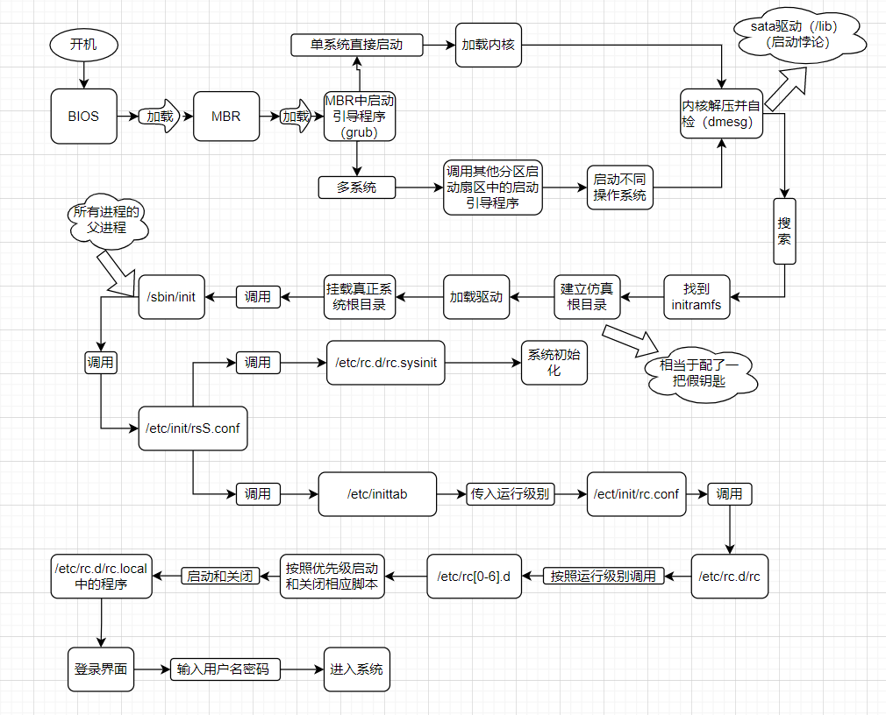

注意下面针对 centos6.x 的，现在 centos7 和 8 有很大的变化，下述仅供参考
# Centos6.x 启动管理
# 运行级别
运行级别
运行级别 含义 0 关机 1 单用户模式，可以想象为 windows 的安全模式，主要用于系统修复 2 不完全的命令行模式，不含 NFS 服务（NFS 服务是 linux 和 linux 之间的一个文件共享服务） 3 完全的命令行模式，就是标准字符界面，就是我们经常用到的模式 4 系统保留，未使用 5 图形模式 6 重启动 运行级别命令
[root@core-pods-3 ~]# runlevel # 查看运行级别
N 3 # N 代表我进入 3 级别之前是哪个级别，这里只我一开机就进入第 3 级别
[root@core-pods-3 ~]# init 5 # 改变运行级别，basic server 不包括图形界面，是不行的
[root@core-pods-3 ~]# runlevel
3 5 # 从字符界面 3 进入到了图形界面 5 的意思
[root@core-pods-3 ~]# init 3
[root@core-pods-3 ~]# runlevel
5 3
[root@core-pods-3 ~]# init 0 # 关机，不安全，不保存正在运行的程序相关信息
系统默认运行级别
[root@core-pods-3 ~]# vi /etc/inittab | |
id:3:initdefault: | |
# 系统开机后直接进入哪个运行级别，inittab 文件从 centos6 开始就一直在削弱，centos7 inittab 里面已经没有内容了 | |
# for centos7 | |
# To set a default target, run: | |
# systemctl set-default TARGET.target |
# 系统启动过程

# initramfs 内存文件系统
centos6.x 中使用了 initramfs 内存文件系统取代了 centos5.x 中的 initrd RAM Disk。他们的作用类似，可以通过启动引导程序加载到内存中，然后加载启动过程中所需要的内核模块，比如 USB、SATA、SCSI 硬盘的驱动和 LVM、RAID 文件系统的驱动。
[root@core-pods-3 tmp]# cp /boot/initramfs-3.10.0-514.el7.x86_64.img /tmp/test | |
[root@core-pods-3 tmp]# cd /tmp/test/ | |
[root@core-pods-3 test]# ls | |
initramfs-3.10.0-514.el7.x86_64.img | |
[root@core-pods-3 test]# file initramfs-3.10.0-514.el7.x86_64.img | |
initramfs-3.10.0-514.el7.x86_64.img: gzip compressed data, from Unix, last modified: Thu Jul 7 03:08:06 2022, max compression | |
[root@core-pods-3 test]# mv initramfs-3.10.0-514.el7.x86_64.img initramfs-3.10.0-514.el7.x86_64.img.gz | |
[root@core-pods-3 test]# gunzip initramfs-3.10.0-514.el7.x86_64.img.gz | |
[root@core-pods-3 test]# ls | |
initramfs-3.10.0-514.el7.x86_64.img | |
[root@core-pods-3 test]# file initramfs-3.10.0-514.el7.x86_64.img | |
initramfs-3.10.0-514.el7.x86_64.img: ASCII cpio archive (SVR4 with no CRC) | |
You have new mail in /var/spool/mail/root | |
[root@core-pods-3 test]# cpio -ivcdu < initramfs-3.10.0-514.el7.x86_64.img |
# rc.sysinit 初始化
由 /etc/rc.d/rc.sysinit 初始化以下内容
- 获得网络环境
- 挂载设备
- 开机启动画面 Plymouth（取替了过往的 RHGB）
- 判断是否启用 SELinux
- 显示于开机过程中的欢迎画面
- 初始化硬件
- 用户自定义模块的加载
- 配置内核的参数
- 设置主机名
- 同步存储器
- 设备映射器及相关的初始化
- 初始化软件磁盘阵列（RAID）
- 初始化 LVM 的文件系统功能
- 检验磁盘文件系统（fsck）
- 设置磁盘配额（quota）
- 重新以可读写模式挂载系统磁盘
- 更新 quota（非必要）
- 启动系统虚拟随机数生成器
- 配置机器（非必要）
- 清除开机过程当中的临时文件
- 创建 ICE 目录
- 启动交换分区（swap）
- 将开机信息写入 /var/log/dmesg 文件中
# rc 文件
调用 /etc/rc.d/rc 文件
运行界别参数传入 /etc/rc.d/rc 这个脚本之后，由这个脚本文件按照不同的运行级别启动 /etc/rc[0-6].d/ 目录中的相应的程序
- /etc/rc3.d/k?? 开头的文件（?? 是数字），会按照数字顺序依次关闭，对应操作 - 关机
- /etc/rc3.d/S?? 开头的文件（?? 是数字），会按照数字顺序依次启动，对应操作 - 开机
# 启动引导程序 grub
# Grub 配置文件
- grub 中分区表示
| 硬盘 | 分区 | linux 中设备文件名 | grub 中设备文件名 |
|---|---|---|---|
| 第一块 SCSI 硬盘 | 第一个主分区 | /dev/sda1 | hd(0,0) |
| --- | 第二个主分区 | /dev/sda2 | hd(0,1) |
| --- | 扩展分区 | /dev/sda3 | hd(0,2) |
| --- | 第一个逻辑分区 | /dev/sda5 | hd(0,4) |
| 第二块 SCSI 硬盘 | 第一个主分区 | /dev/sdb1 | hd(1,0) |
| --- | 第二个主分区 | /dev/sdb2 | hd(1,1) |
| --- | 扩展分区 | /dev/sdb3 | hd(1,2) |
| --- | 第一个逻辑分区 | /dev/sdb5 | hd(1,4) |
[root@core-pods-3 grub2]# ll /boot/grub2 # centos7 | |
total 30 | |
-rw-r--r--. 1 root root 84 Mar 13 2017 device.map | |
drwxr-xr-x. 2 root root 1024 Mar 13 2017 fonts | |
-rw-r--r-- 1 root root 6877 Jul 7 03:07 grub.cfg | |
-rw-r--r--. 1 root root 5081 Jun 30 05:22 grub.cfg.1657177367.rpmsave | |
-rw-r--r--. 1 root root 1024 Jul 7 03:07 grubenv | |
drwxr-xr-x. 2 root root 8192 Mar 13 2017 i386-pc | |
drwxr-xr-x. 2 root root 1024 Mar 13 2017 locale | |
You have new mail in /var/spool/mail/root |
- grub 配置文件
编辑 grub 配置文件： vi /boot/grub/grub.conf
- default=0 默认启动第一个系统
- timeout=5 等待时间，默认是 5 秒
- splashimage=(hd0,0)/grub/splash.xpm.gz 这里是指定 grub 启动时的背景图像文件的保存位置
- hiddenmenu 隐藏菜单
- title CentOS（xxxxx） 标题
- root (hd0,0) 是指启动程序的保存分区
- kernel /vmlinuz-xxx.i686 roxxxx 定义内核加载时的选项
- initrd /initramfs-xxx.i686.img 指定了 initramfs 内存文件系统镜像文件的所在位置